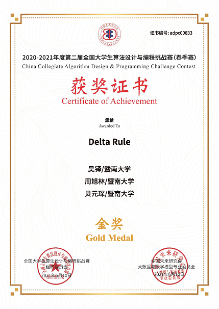
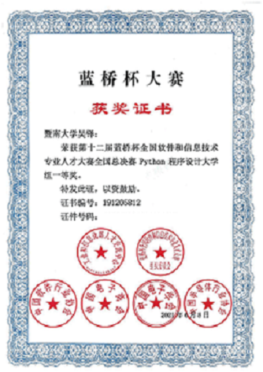
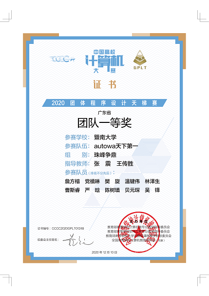
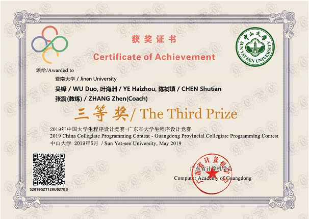
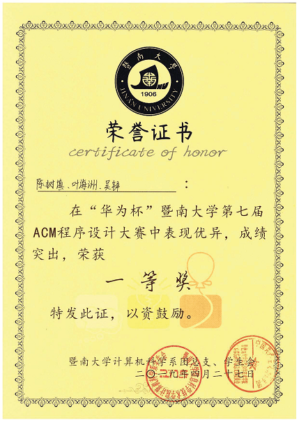

Honors & Scholarships
2021-2022 Jinan University ‘5A’ Excellence Leadership Program – ‘Academic Star’ (Nominated)
2021-2022 Jinan University Scholarship of Innovative and Talented Undergraduate (10000 RMB, Only
30 Awardee) 2018-2019, 2021-2022 the Second Prize of Jinan University Outstanding Student Scholarship
Competition Awards
From 2018 to 2021, I had actively participated in many programming competitions. So far, I have won 14
awards in total, including 6 national ones (1st × 2, 3rd × 4), 5 provincial
ones (1st × 3, 2nd × 1, 3rd × 1), 3 university-level ones (1st × 1, 2nd × 1, 3rd ×
1). Belows are the representative awards of mine.
|

|
China Collegiate Algorithm Design & Programming Challenge Contest
[2021.06]
Introduction: Similar to ACM, this competition sets 10+ programming problems, ranging from
easy to difficult, involving various algorithms. It is gaining greater
reputation year by year, attracting many top universities to participate in, such as
Tsinghua University, Peking University, Shanghai Jiao Tong University etc.
Organizer: The Chinese Society for Futures Studies (中国未来研究会)
Level: National
Type: Team Competition
Award: Gold Prize (Top 5% Among 1300+ Teams)
|
|

|
the 12th Lanqiao Cup Python Programming Competition (National Final)
[2021.06]
Introduction:After 10+ years of development, the competition has become the
leading national programming contest in
China. Since 2019, it has been on the National College
Student Competition Ranking List (全国普通高校大学生竞赛排行榜).
Organizer: Ministry of Industry and Information Technology (工业和信息化部)
Level: National
Type: Individual Competition
Award: First Prize (Top 5%)
|
|

|
Group Programming Ladder Tournament, TOP-competing Group of
Guangdong Province [2020.12]
Introduction: Since 2019, the competition has been on the National College
Student Competition Ranking List (全国普通高校大学生竞赛排行榜).
Organizer: Computer Education Research Association of Chinese Universities
(全国高等学校计算机教育研究会)
Level: Provincial
Type: Team Competition
Award: Group First Prize
|
|

|
Guangdong Provincial Collegiate ACM Programming Competition [2019.05]
|
|

|
The 7th ‘Huawei Cup’ ACM Programming Competition of Jinan University
[2019.04]
Organizer: Department of Computer Science, Jinan University (暨南大学计算机科学系)
Level: University
Type: Team Competition
Award: First Prize (Champion)
|
|